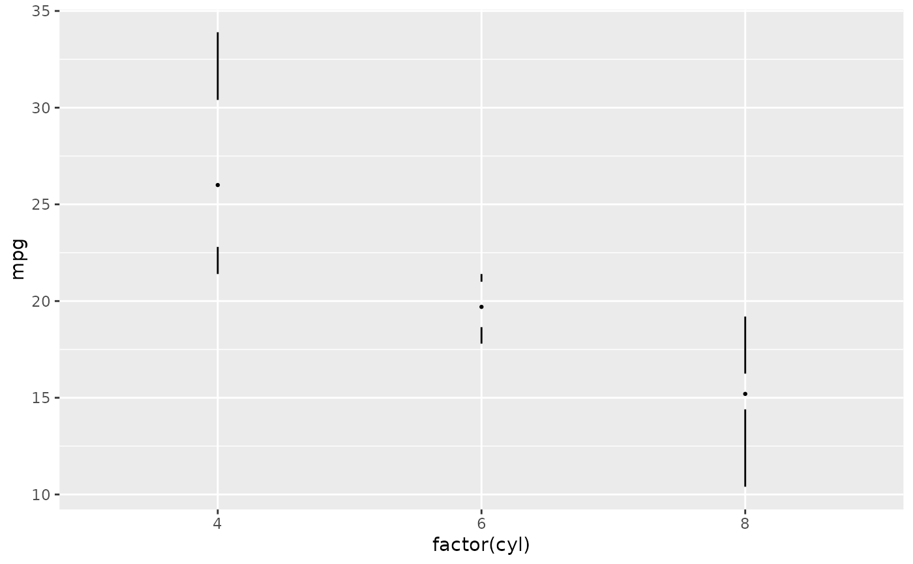
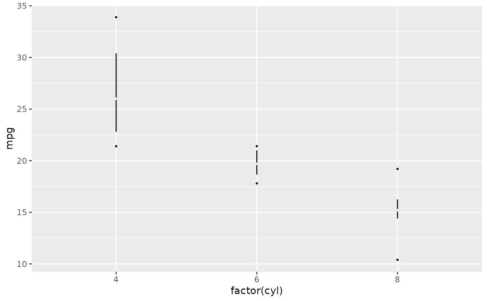
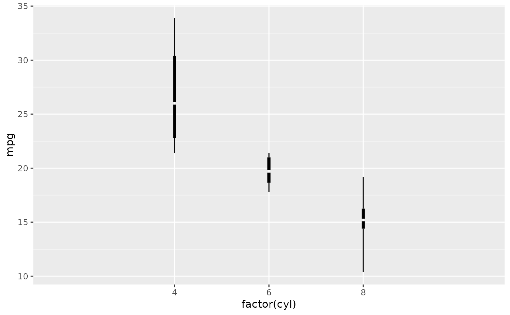
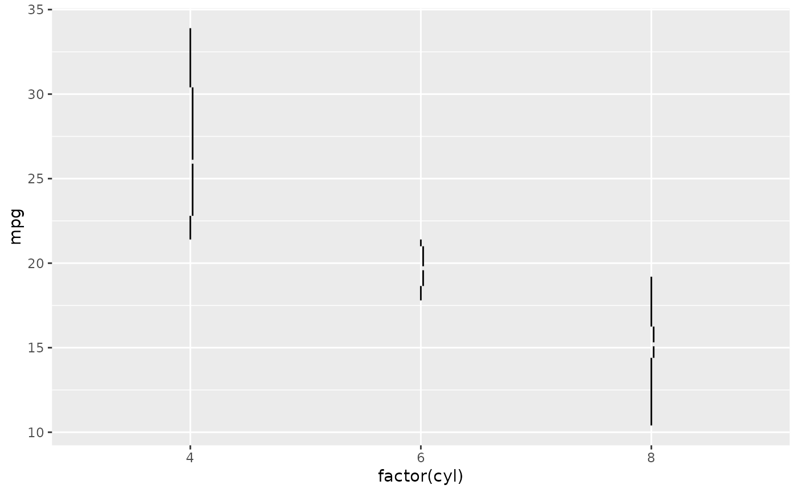
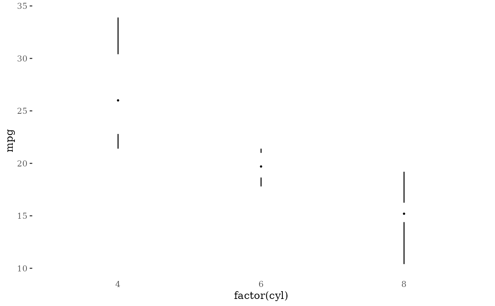
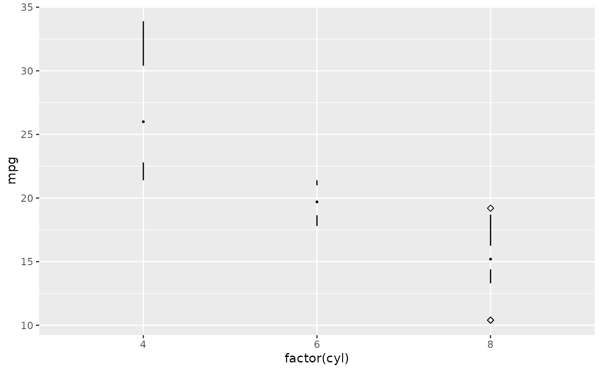

Edward Tufte's revisions of the box plot as described in The Visual Display of Quantitative Information. This functions provides several box plot variants:
A point indicating the median, a gap indicating the interquartile range, and lines for whiskers.
An offset line indicating the interquartile range and a gap indicating the median.
A line indicating the interquartile range, a gap indicating the median, and points indicating the minimum and maximum values
A wide line indicating the interquartile range, a gap indicating the median, and lines indicating the minimum and maximum.
Usage
geom_tufteboxplot(
mapping = NULL,
data = NULL,
stat = "fivenumber",
position = "dodge",
outlier.colour = "black",
outlier.shape = 19,
outlier.size = 1.5,
outlier.stroke = 0.5,
voffset = 0.01,
hoffset = 0.005,
na.rm = FALSE,
show.legend = NA,
inherit.aes = TRUE,
median.type = "point",
whisker.type = "line",
...
)Arguments
- mapping
Set of aesthetic mappings created by
aes(). If specified andinherit.aes = TRUE(the default), it is combined with the default mapping at the top level of the plot. You must supplymappingif there is no plot mapping.- data
The data to be displayed in this layer. There are three options:
If
NULL, the default, the data is inherited from the plot data as specified in the call toggplot().A
data.frame, or other object, will override the plot data. All objects will be fortified to produce a data frame. Seefortify()for which variables will be created.A
functionwill be called with a single argument, the plot data. The return value must be adata.frame, and will be used as the layer data. Afunctioncan be created from aformula(e.g.~ head(.x, 10)).- stat
The statistical transformation to use on the data for this layer, as a string. The default (
stat = 'fivenumber') callsstat_fivenumberand produces whiskers that extend from the interquartile range to the extremes of the data; specifyingstat_boxplotwill produce a more traditional boxplot with whiskers extending to the most extreme points that are < 1.5 IQR away from the hinges (i.e., the first and third quartiles).- position
Position adjustment, either as a string naming the adjustment (e.g.
"jitter"to useposition_jitter), or the result of a call to a position adjustment function. Use the latter if you need to change the settings of the adjustment.- outlier.colour
colour for outlying points
- outlier.shape
shape of outlying points
- outlier.size
size of outlying points
- outlier.stroke
stroke for outlying points
- voffset
controls the size of the gap in the line representing the median when
median.type = 'line'. This is a fraction of the range ofy.- hoffset
controls how much the interquartile line is offset from the whiskers when
median.type = 'line'. This is a fraction of the range ofx.- na.rm
If
FALSE, the default, missing values are removed with a warning. IfTRUE, missing values are silently removed.- show.legend
logical. Should this layer be included in the legends?
NA, the default, includes if any aesthetics are mapped.FALSEnever includes, andTRUEalways includes. It can also be a named logical vector to finely select the aesthetics to display.- inherit.aes
If
FALSE, overrides the default aesthetics, rather than combining with them. This is most useful for helper functions that define both data and aesthetics and shouldn't inherit behaviour from the default plot specification, e.g.borders().- median.type
If
'point', then the median is represented by a point, and the interquartile range by a gap in the line. Ifmedian.type='line', then the interquartile range is represented by a line, possibly offset, and the median by a gap in the line.- whisker.type
If
'line', then whiskers are represented by lines. If'point', then whiskers are represented by points atyminandymax.- ...
Other arguments passed on to
layer(). These are often aesthetics, used to set an aesthetic to a fixed value, likecolour = "red"orsize = 3. They may also be parameters to the paired geom/stat.
References
Tufte, Edward R. (2001) The Visual Display of Quantitative Information, Chapter 6.
McGill, R., Tukey, J. W. and Larsen, W. A. (1978) Variations of box plots. The American Statistician 32, 12-16.
See also
Other geom tufte:
geom_rangeframe()
Examples
library("ggplot2")
p <- ggplot(mtcars, aes(factor(cyl), mpg))
# with a point for the median and lines for whiskers
p + geom_tufteboxplot()
#> Warning: The following aesthetics were dropped during statistical transformation: y
#> ℹ This can happen when ggplot fails to infer the correct grouping structure in
#> the data.
#> ℹ Did you forget to specify a `group` aesthetic or to convert a numerical
#> variable into a factor?
#> Warning: Using the `size` aesthetic in this geom was deprecated in ggplot2 3.4.0.
#> ℹ Please use `linewidth` in the `default_aes` field and elsewhere instead.
#> Warning: Using the `size` aesthetic with geom_segment was deprecated in ggplot2 3.4.0.
#> ℹ Please use the `linewidth` aesthetic instead.

# with a line for the interquartile range and points for whiskers
p + geom_tufteboxplot(median.type = "line", whisker.type = "point", hoffset = 0)
#> Warning: The following aesthetics were dropped during statistical transformation: y
#> ℹ This can happen when ggplot fails to infer the correct grouping structure in
#> the data.
#> ℹ Did you forget to specify a `group` aesthetic or to convert a numerical
#> variable into a factor?

# with a wide line for the interquartile range and lines for whiskers
p + geom_tufteboxplot(median.type = "line", hoffset = 0, width = 3)
#> Warning: The following aesthetics were dropped during statistical transformation: y
#> ℹ This can happen when ggplot fails to infer the correct grouping structure in
#> the data.
#> ℹ Did you forget to specify a `group` aesthetic or to convert a numerical
#> variable into a factor?
#> Warning: `position_dodge()` requires non-overlapping x intervals

# with an offset line for the interquartile range and lines for whiskers
p + geom_tufteboxplot(median.type = "line")
#> Warning: The following aesthetics were dropped during statistical transformation: y
#> ℹ This can happen when ggplot fails to infer the correct grouping structure in
#> the data.
#> ℹ Did you forget to specify a `group` aesthetic or to convert a numerical
#> variable into a factor?

# combined with theme_tufte
p + geom_tufteboxplot() +
theme_tufte() +
theme(axis.ticks.x = element_blank())
#> Warning: The following aesthetics were dropped during statistical transformation: y
#> ℹ This can happen when ggplot fails to infer the correct grouping structure in
#> the data.
#> ℹ Did you forget to specify a `group` aesthetic or to convert a numerical
#> variable into a factor?

# traditional boxplot with whiskers only out to 1.5 IQR, outlier points
p + geom_tufteboxplot(stat = "boxplot", outlier.shape = 5)
